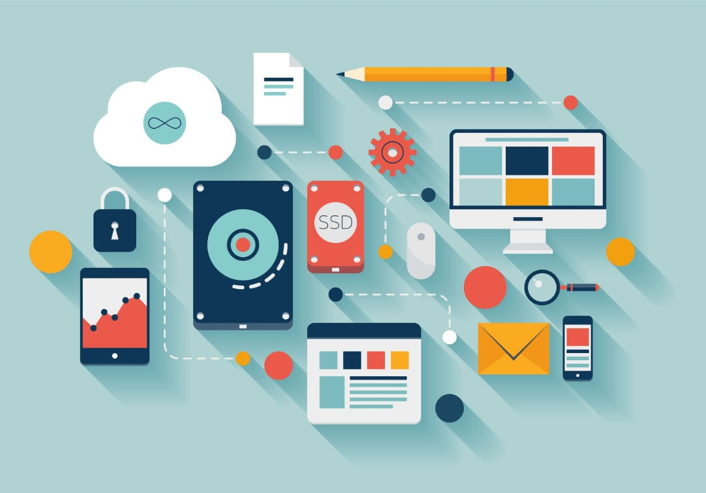

Internet de las cosas(Internet of Things) o IoT por sus siglas en ingles, es un concepto un poco abstracto pero que ha estado ganando bastante popularidad ultimamente. La idea que intenta representar queda bastante bien ilustrada por su nombre, cosas cotidianas que se conectan al Internet, pero la verdad el internet de las cosas es mucho mas que eso.
Desde hace unos muchos años que se viene trabajando con la idea de hacer un poco más interactivos todos los objetos de uso cotidiano. Ideas como una smart home, también conocido como la casa del mañana, han evolucionado de una manera exponencial.
El Internet de las cosas potencia objetos que anteriormente se conectaban mediante circuito cerrado, como comunicadores, cámaras, sensores, y demás, y les permite comunicarse globalmente mediante el uso de la red.
El internet de las cosas en una defincion simple seria que se trata de una red que interconecta objetos físicos valiéndose del Internet. Los objetos se valen de sistemas embebidos, o lo que es lo mismo, hardware especializado que le permite no solo la conectividad al Internet, sino que además programa eventos específicos en función de las tareas que le sean dictadas remotamente.
El secreto de todo esto es que se trata de de chips y circuitos que comparados como por ejemplo un smartphone, podrían parecernos muy rudimentarios, pero que cuentan con todas las herramientas necesarias para cumplir labores especializadas muy especificas.
No hay un tipo específico de objetos conectados al Internet de las cosas. En lugar de eso se les puede clasificar como objetos que funcionan como sensores y objetos que realizan acciones activas. Pero obviamente hay objetos que cumplen ambas funciones de manera simultánea.
En cualquier caso el principio es el mismo y la clave es la operación remota. Cada uno de los objetos conectados al Internet tiene una IP especifica y mediante esa IP puede ser accedido pare recibir instrucciones. Así mismo, puede contactar con un servidor externo y enviar los datos que recoja.
El interenet de las cosas es algo que esta teniendo un gran auge actualmente. Pero todavia falta mucho para llegar a su maximo potencial
A diferencia de algunas tecnologías mucho más populares entre las personas, el Internet de las cosas no ha encontrado su foco de explosión en el mercado del consumo. Quizás la tecnología está aún demasiado primitivas, o quizás los grandes del sector no han visto la oportunidad correcta para dar su maximo potencial. Aún así hemos visto como Apple y Google han dado algunos pasos discretos con tecnologías como Home Kit y Android @Home.
Como sea, es el sector privado donde el Internet de las Cosas se está haciendo cada vez más popular.
La industria de producción en masa: la maquinaria que se encarga de controlar los procesos de fabricación, robots ensambladores, sensores de temperatura, control de producción, todo está conectado al Internet en cada vez más empresas lo que permite centralizar el control de la infraestructura.
Sector salud: cada vez más clínicas y hospitales alrededor del mundo confían en sistemas que les permiten al personal de salud monitorear activamente a los pacientes de manera ambulatoria y no invasiva.
Control de infraestructura urbana: control de semáforos, puentes, vías de tren, cámaras urbanas. Cada vez más ciudades implementan este tipo de infraestructuras basadas en el Internet de las Cosas que permiten monitorear el correcto funcionamiento de sus estructuras además de adaptar más flexiblemente su funcionamiento ante nuevos eventos.
Control ambiental: una de las áreas en las que está teniendo más éxito el Internet de las cosas, pues permite acceder desde prácticamente cualquier parte a información de sensores atmosféricos, meteorológicos, y sísmicos.